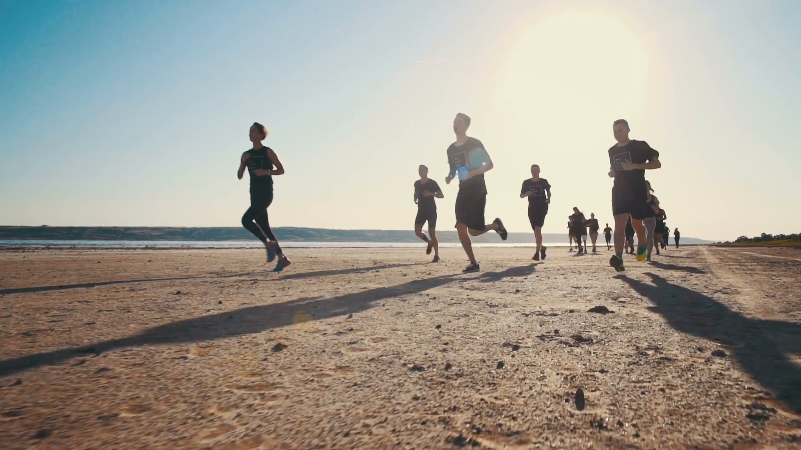

PHYSICAL REQUIREMENTS
As part of the blue belt examination process
there is a standard physical test that
measures stamina and physical conditioning.
- Three kilometer run in 14 minutes
- 10 Pull-ups
- 15 Deeps
- 80 Crunches in 2 minutes
- 60 Push-ups
- 5 x 5kg weight roll-ups
- 400 meter sprints in 80 seconds